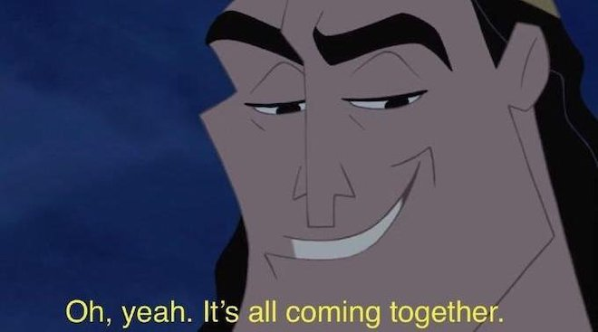
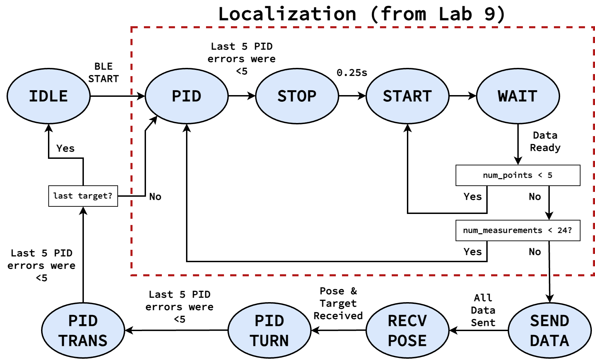
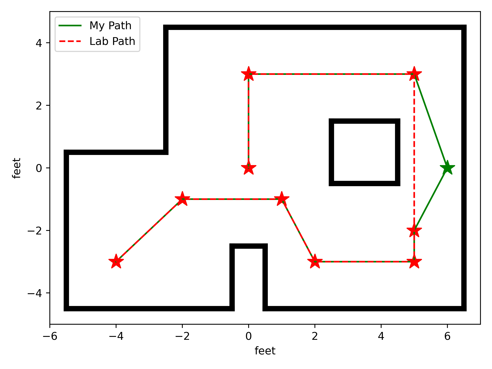

Lab 12: Path Planning and Execution
{kind=link}
This lab involves the synthesis of all the previous components in order to traverse a given path around the lab, involving:
Localizing where we are in the map (Lab 9: Mapping & Lab 11: Localization (Real))
Moving to the next waypoint in the path, involving turning (Lab 5: PID Control) and rotating (Lab 6: Orientation Control) using a PID controller and position estimates (Lab 7: Kalman Filtering)
My approach to solving this was to implement the full Bayes filter, where the robot’s localization data would be used to update the probability, and the robot would be sent commands as part of the prediction step (to achieve via PID control). This would allow for recovery from errors by localizing (unlike open-loop), as well as reusing and building on code from previous labs. While more advanced search/obstacle avoiding algorithms were considered, I ultimately didn’t choose them due to the added unnecessary complexity (as no obstacles are in our intended path).
State Machine
To implement the robot-side portion of the Bayes filter, we must
Gather distance data around us first
Send the distance data to Python (to localize)
Receive the estimated pose and the target (expressed as a turn angle and translation distance)
Use PID to first turn, then translate to the target waypoint
Repeat for all remaining waypoints
Localization
Localizing after each step will significantly reduce our speed; however, it will increase the effective number of update steps in our Bayes filter, improving our accuracy in pose estimation and moving as close as possible to each waypoint
This is implemented as a state machine on the Artemis:
{kind=link}
Localization Data
The states surrounded in the dashed red box are exactly the same as
Lab 9: Mapping; they rotate the robot in a circle, and collect 24 distance
measurements at equally-spaced angles. The other states are included in
the same measure_step function used to change states in Lab 9 (in
a case statement).
The main adjustment is that we now have two PID controllers; one for angle movement (using the parameters from Lab 6), and one for translational movement (using the parameters from Lab 5)
PID angle_pid( 1.0, 0.3, 0.5 );
PID trans_pid( 0.10, 0.008, 0.05 );
This also means that instead of having run_pid_step from Lab 9, we
now have run_angle_pid_step and run_trans_pid_step; these are
identical to before, but use the appropriate PID controller, as well
as adjusting the translational PID to settle when the last 5 measurements
are within 40mm (as opposed to 15 degrees for the angle PID), empirically
determined to be accurate enough for navigation while loose enough to let
the PID controller settle.
SEND_DATA
This is where we send the localized data back to Python (as opposed to having Python explicitly request it). This also eliminates the need for a “done” notification; Python knows we’ve collected all the data once it’s received it all.
case SEND_DATA:
// reset receive counter
data_recv = false;
for ( int i = 0; i < data_entry_idx; i++ ) {
tx_estring_value.clear();
tx_estring_value.append( data_time_entries[i] );
tx_estring_value.append( "|" );
tx_estring_value.append( data_yaw_entries[i] );
tx_estring_value.append( "|" );
tx_estring_value.append( data_distance_entries[i] );
tx_characteristic_string.writeValue( tx_estring_value.c_str() );
Serial.printf( "Sending data %d...\n", i );
}
curr_state = RECV_POSE;
RECV_POSE
RECV_POSE is where we wait for Python to send us our next movement
command, which will set data_recv to true (initially set
false in SEND_DATA). When we receive the data, we start the
angle PID by modifying the set point by the received target angle
case RECV_POSE:
if ( data_recv ) {
curr_state = PID_TURN;
start_pid();
angle_pid.set_setpoint(
angle_no_wrap( dmp.yaw().angle - target_angle_offset ) );
}
break;
The BLE target SEND_POSE is used to communicate the data
void set_target( int dist, double angle_offset )
{
target_distance = dist;
target_angle_offset = angle_offset;
data_recv = true;
}
// In `handle_command`
case SEND_POSE:
int dist, last;
float angle;
success = robot_cmd.get_next_value( dist );
if ( !success )
return;
success = robot_cmd.get_next_value( angle );
if ( !success )
return;
set_target( dist, angle );
break;
PID_TURN and TURN_STOP
These two states act functionally identical to PID and STOP from
the localization; we wait in PID_TURN until the targeted turn is
completed, then wait for some time in TURN_STOP to make sure we’ve
stopped moving before continuing (waiting a little longer than before as
a precaution for turning larger angles with more speed)
case PID_TURN:
if ( run_angle_pid_step() ) {
stop_pid();
stop_time = millis();
num_measurements = 0;
curr_state = TURN_STOP;
}
break;
case TURN_STOP:
if ( curr_time - stop_time > 500 ) {
curr_state = MEASURE_DIST;
num_points = 0;
}
break;
MEASURE_DIST and MEASURE_DIST_WAIT
These states are functionally identical to START and WAIT from the
localization; we start our ToF ranging in MEASURE_DIST, then wait in
MEASURE_DIST_WAIT for the measurement to complete. If we have fewer
than 5 measurements, we go back to MEASURE_DIST; otherwise, we use
the average as our total measurement, and compute our translational PID
setpoint as our measured distance minus our target movement (to move
the target amount in total).
Distance Offset
An offset of 75 is included in the target, to account for the
distance between our our sensor (used in distance measurement) and
the center of the robot (what our target expects)
case MEASURE_DIST:
tofs.sensor1.startRanging();
curr_state = MEASURE_DIST_WAIT;
break;
case MEASURE_DIST_WAIT:
if ( tofs.sensor1.checkForDataReady() ) {
data_points[num_points++] = tofs.sensor1.getDistance();
if ( num_points < 5 ) {
curr_state = MEASURE_DIST;
}
else {
avg_distance =
( data_points[0] + data_points[1] + data_points[2] +
data_points[3] + data_points[4] ) /
5;
// Set distance PID to avg_distance - ( target + 75 )
trans_pid.set_setpoint( avg_distance -
( target_distance + 75 ) );
// Prevent wall collisions
if ( ( avg_distance - ( target_distance + 75 ) ) < 30 ) {
trans_pid.set_setpoint( 30 );
}
start_pid();
curr_state = PID_TRANS;
}
}
break;
PID_TRANS
Finally, we wait for our translational PID to be done; this is similar to
PID_TURN, but uses our translational PID. We also communicate “done”
back to Python, to let it know the movement is complete.
case PID_TRANS:
if ( run_trans_pid_step() ) {
stop_pid();
stop_time = millis();
curr_state = IDLE;
tx_estring_value.clear();
tx_estring_value.append( "done" );
tx_characteristic_string.writeValue( tx_estring_value.c_str() );
}
break;
Once in IDLE, Python can command another localization with the
RUN_TURN command.
Python Processing
On the Python side, we implement the Bayes filter with the provided data. I was able to re-use my Lab 11 code for the update step (as the localization FSM remained the same); however, I needed to incorporate the prediction step to both update our prior belief, as well as command the robot.
To do this, I had a list of the waypoints, as well as which waypoint we were on. When predicting, I updated our current pose to reflect the maximum likelihood estimate after updating, and the next pose as our next waypoint (adjusting the angle of the next pose to avoid a final unnecessary turn).
From here, I could use compute_control to determine the necessary
movements, and communicate them to the robot (in the RECV_POSE state)
to execute the motion. Finally, the prediction step waits for the motion
to be complete, as well as updates the prior belief to reflect the motion.
waypoints_ft = [
(-4, -3),
(-2, -1),
(1, -1),
(2, -3),
(5, -3),
(5, -2),
(6, 0),
(5, 3),
(0, 3),
(0, 0),
]
waypoints = [(a / 3.28, b / 3.28) for (a, b) in waypoints_ft]
curr_pose = (0, 0, 0) # Update in `prediction_step`
next_pose = (0, 0, 0) # Update in `prediction_step`
next_pose_idx = 1
async def prediction_step():
""" Instruct the robot to move to the next waypoint, and
update the belief appropriately.
Returns a boolean representing whether we just moved to the
final waypoint or not.
"""
global next_pose_idx
global curr_pose
global next_pose
# Update the Cartesian coordinates of our next pose
max_bel_idx = get_max(loc.bel)
curr_pose = mapper.from_map(*max_bel_idx[0])
next_pose = waypoints[next_pose_idx]
next_pose_idx += 1
# Compute our next pose, such that the final angle is 0
next_pose_angle = mapper.normalize_angle(
math.degrees(
np.arctan2(next_pose[1]-curr_pose[1],
next_pose[0]-curr_pose[0]
)
) - curr_pose[2]
)
next_pose = (next_pose[0], next_pose[1], next_pose_angle)
# Compute the control needed
rot, trans, rot_0 = loc.compute_control(next_pose, curr_pose)
# Convert units
trans = int(trans * 1000)
print("Sending command: " + str(trans) + "|" + str(rot))
# Wait until we're done moving
global is_done
is_done = False
def resp_handler(_uid, response):
global is_done
resp = response.decode()
print("Got response: ", resp)
if resp == "done":
is_done = True
ble.start_notify(ble.uuid['RX_STRING'], resp_handler)
async def wait_for_done():
global is_done
while( not is_done ):
await asyncio.sleep(3)
# Send the command to our robot
ble.send_command(CMD.SEND_POSE, str(trans) + "|" + str(rot))
print("Waiting...")
await wait_for_done()
ble.stop_notify(ble.uuid['RX_STRING'])
print("Done!", flush = True)
# Update our probability
loc.prediction_step(next_pose, curr_pose)
# Update our pose for the next iteration
curr_pose = next_pose
return ( next_pose_idx == len(waypoints) )
prediction_step returns whether we just moved to the last waypoint,
allowing our main Bayes filter loop to know when we’re done with the path
# Get initial observation Data by executing a 360 degree rotation motion
await loc.get_observation_data()
# Run Update Step
loc.update_step()
loc.plot_update_step_data(plot_data=True)
while True:
# Run prediction and move the robot
done = await prediction_step()
# Get observation Data by executing a 360 degree rotation motion
await loc.get_observation_data()
# Run Update Step
loc.update_step()
loc.plot_update_step_data(plot_data=True)
if done:
break
Final State
The robot will start by running the initial observation loop, moving
from IDLE and waiting in RECV_POSE. The prediction step will
provide the pose, letting the robot go from RECV_POSE all the way
back to IDLE. Since our last step is an update, the robot ends
waiting in RECV_POSE; this means we would need to reset to start
another complete path iteration, but isn’t consequential for one run
Another note is that I added a waypoint at \((6, 0)\) from those required; I found that being slightly off between the two default points close to the box obstacle could result in the robot running into it; adding another point to move away from the box helped
{kind=link}
Full System
With the above code, my robot was successfully able to navigate to or close to all waypoints in one continuous run using a closed-loop complete Bayes filter. Two demonstrations are shown below; the first was slightly off in the beginning (but recovered by being able to localize), and the superior second run was very accurate, but required some manual adjustment when the wheels ended up rubbing against the side of the arena. I also updated the second run to show the predictions being mapped simultaneously in a screen recording, as well as localizing at the final point.
Run 1
Final Point
Note that the final point isn’t included in the plot, as the robot didn’t update after moving to the final point. This is fixed for Run 2
{kind=link}
Target Waypoint (m, m) |
Belief after Moving (m, m, degrees) |
Belief Probability |
|---|---|---|
\((-1.220, -0.914)\) |
\((-1.524, -0.914, -10^\circ)\) |
\(1.0\) |
\((-0.610, -0.305)\) |
\((0.000, 0.305, -10^\circ)\) |
\(1.0\) |
\((0.305, -0.305)\) |
\((0.305, -0.914, -70^\circ)\) |
\(0.9999999\) |
\((0.610, -0.914)\) |
\((0.305, -1.219, -70^\circ)\) |
\(0.9644010\) |
\((1.524, -0.914)\) |
\((1.829, -0.610, 30^\circ)\) |
\(0.9999993\) |
\((1.524, -0.610)\) |
\((1.219, -0.305, 110^\circ)\) |
\(1.0\) |
\((1.829, 0.000)\) |
\((1.829, 0.305, 70^\circ)\) |
\(0.8819015\) |
\((1.524, 0.914)\) |
\((1.829, 1.219, 90^\circ)\) |
\(1.0\) |
\((0.000, 0.914)\) |
\((0.000, 1.219, 170^\circ)\) |
\(1.0\) |
Run 2
{kind=link}
Target Waypoint (m, m) |
Belief after Moving (m, m, degrees) |
Belief Probability |
|---|---|---|
\((-1.220, -0.914)\) |
\((-0.914, -0.914, 10^\circ)\) |
\(0.9999999\) |
\((-0.610, -0.305)\) |
\((-0.610, -0.305, 50^\circ)\) |
\(1.0\) |
\((0.305, -0.305)\) |
\((0.305, -0.305, -30^\circ)\) |
\(0.9999999\) |
\((0.610, -0.914)\) |
\((0.610, -1.219, -90^\circ)\) |
\(0.9999938\) |
\((1.524, -0.914)\) |
\((1.524, -0.914, 30^\circ)\) |
\(1.0\) |
\((1.524, -0.610)\) |
\((1.524, -0.914, 70^\circ)\) |
\(0.5774311\) |
\((1.829, 0.000)\) |
\((1.829, 0.000, -10^\circ)\) |
\(1.0\) |
\((1.524, 0.914)\) |
\((1.829, 0.305, 70^\circ)\) |
\(0.9999326\) |
\((0.000, 0.914)\) |
\((0.000, 1.219, 130^\circ)\) |
\(1.0\) |
\((0.000, 0.000)\) |
\((0.610, 0.000, 30^\circ)\) |
\(1.0\) |
Notably, our probabilities don’t decay over many movements (which cause uncertainty), as we localize after each movement to increase our certainty. However, individual points did stray somewhat from errors, motivating the overhead of localizing after each point (otherwise, errors might propagate outside of what is needed for navigation).
Source of Error
While the runs were able to demonstrate success, they still weren’t perfect. Some sources of error that they suffered include the following
DMP Drift
Over time (especially with jitter), the DMP’s yaw angle would drift. Since separate measurements will estimate angles relative to their starting point, this only matters when it occurs within a localization; specifically, you’ll notice especially in Run 1 that if the PID controller isn’t able to immediately turn to the angle, it will jitter for a while as it finds where the DMP was drifting, often not at the correct offset from the previous angle.
This drift results in uneven angle spacing and not completing a full turn (as well as some translation from the excessive jitter to find the drifted angle), impacting the quality of the estimation. This can be seen especially in Run 1’s first point; the PID controller jittered twice in this way, resulting in an inaccurate estimation and poor movement (although subsequent localizations allowed it to recover). This also appeared to be the cause of the issue with Run 2’s top-right point, where the jittery step landed on an angle that was in the wrong direction relative to the previous.
Non-Straight Translation
Our robot estimates the distance it has to move by observing the change in the distance measured by the front ToF sensor. If the robot doesn’t move perfectly straight, the ToF will measure distance off of a different point, which may result in a different distance.
Often, such small changes result in little impact. However, the final movement in Run 2 highlighted the impact of obstacles; we initially estimated distance based off of the jutted portion in the bottom of the arena. Slight non-straight movement causes the robot to later based distance on a non-jutted portion, causing it to move further than targeted and have a subsequently innaccurate final localization
Grid Quantization
There were additionally some slight inaccuracies due to the quantization of the grid, meaning we couldn’t reliably be closer than a grid cell; however, this was always close enough for successful navigation
Acknowledgements
While I have none in particular for this lab, just a shout-out to the awesome course staff; I don’t think the course could run without as many people willing to help in lab as much as they did. I ended up working a lot more than I thought I would for this class, but also really enjoyed learning about a field I wasn’t as knowledgeable in, and enjoyed the satisfaction of seeing everything come together in real-life after lots of hard work.